Anketa · Sanja Martinović · projekat „Između redova“
Anketa i rezultati
Anketa za srpsku manjinsku zajednicu u Crnoj Gori: pitanja, odgovori i grafikoni na jednom mjestu.
01 · Upitnik
Pitanja ankete
Originalni sadržaj ankete prikazan je u cijelosti, stranicu po stranicu, kako bi sva pitanja i ponuđeni odgovori ostali vjerni dokumentu.
Pitanja anketeStranica 1 / 12
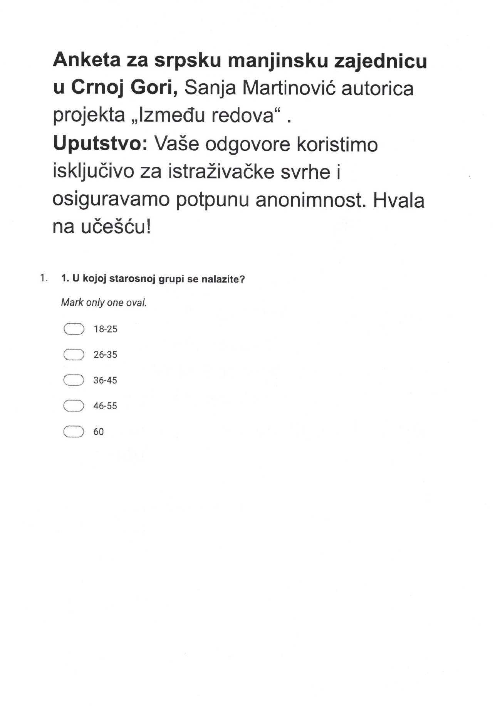
Pitanja anketeStranica 2 / 12
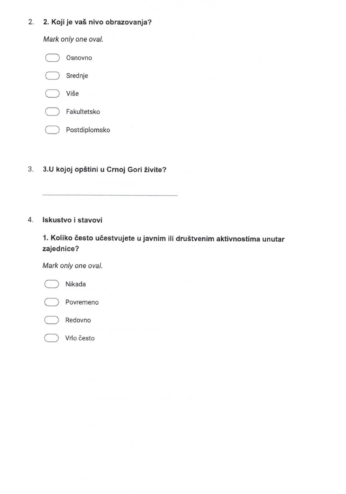
Pitanja anketeStranica 3 / 12
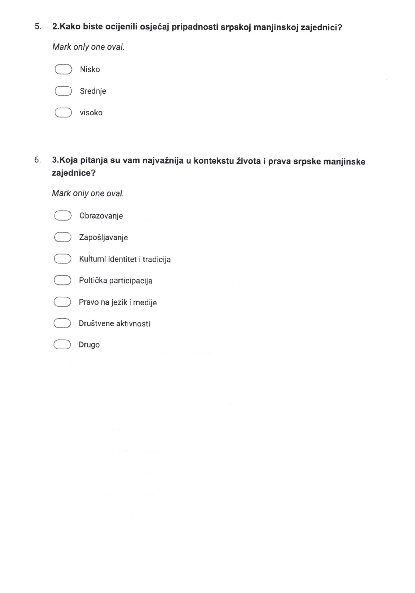
Pitanja anketeStranica 4 / 12
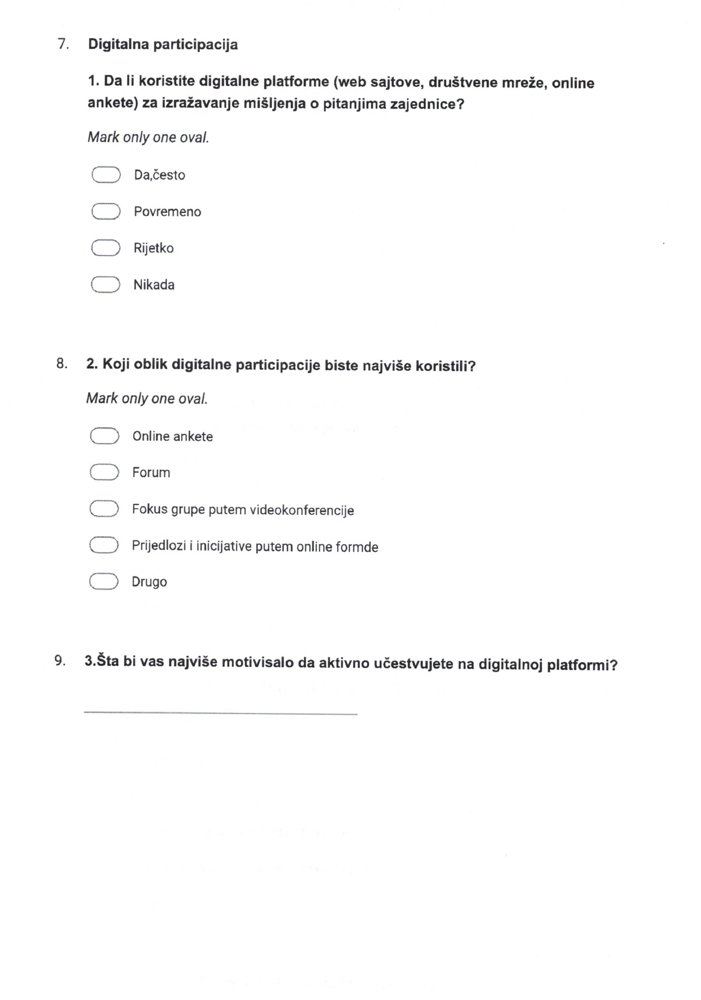
Pitanja anketeStranica 5 / 12
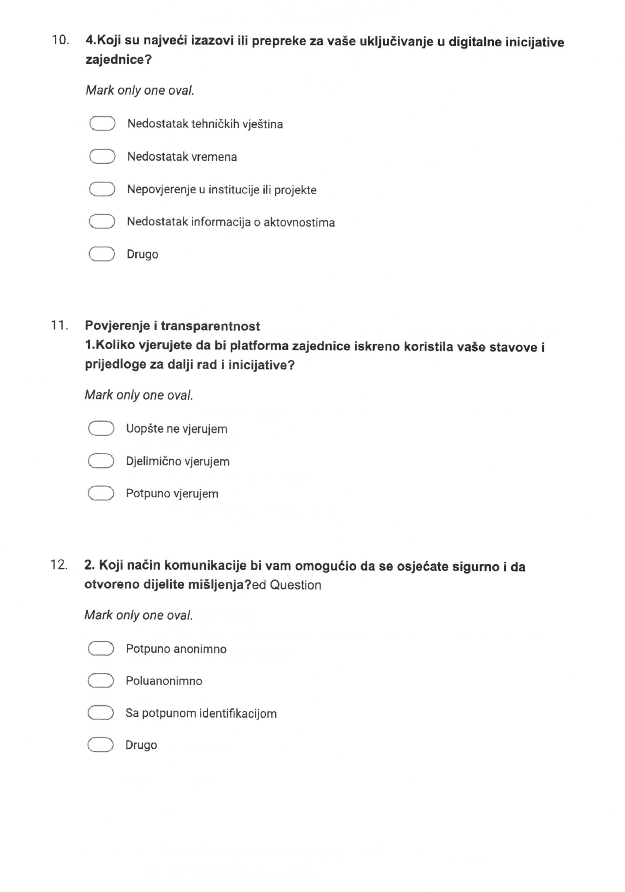
Pitanja anketeStranica 6 / 12
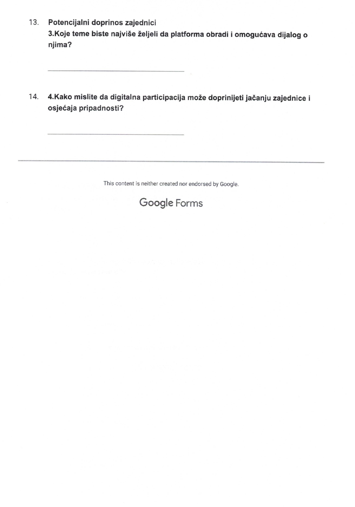
02 · Rezultati
Grafikoni i odgovori
Kompletni rezultati ankete, uključujući grafikone i otvorene odgovore, prikazani su u originalnom obliku iz dokumenta.
Rezultati anketeStranica 7 / 12
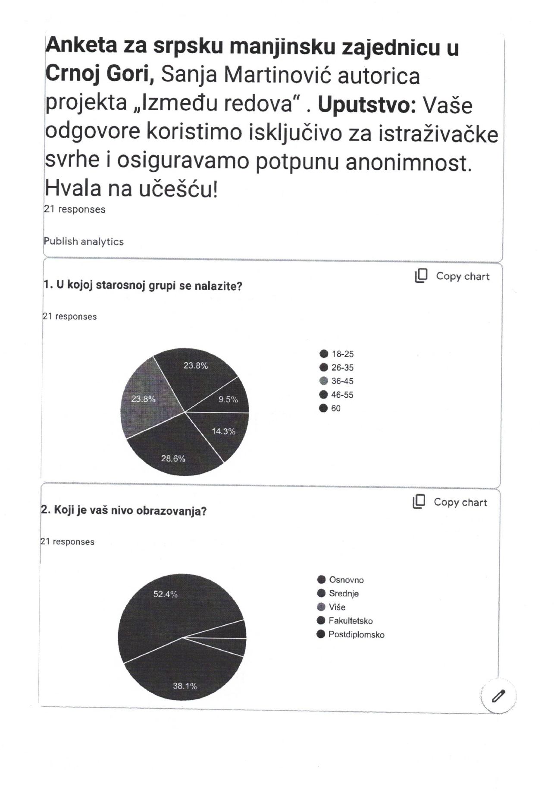
Rezultati anketeStranica 8 / 12
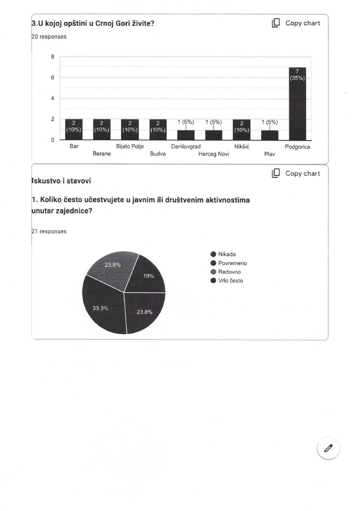
Rezultati anketeStranica 9 / 12
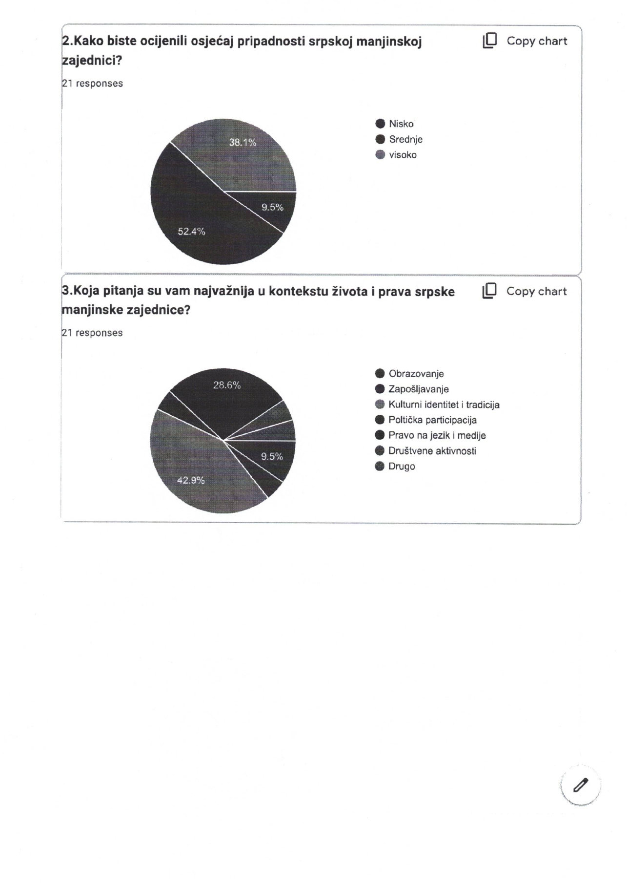
Rezultati anketeStranica 10 / 12
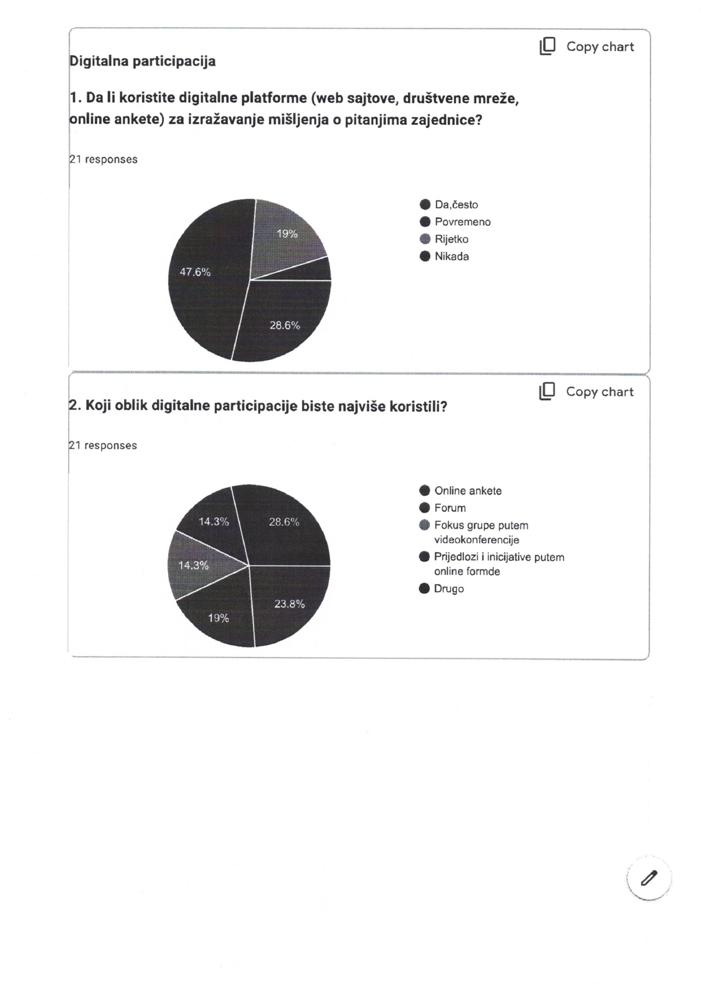
Rezultati anketeStranica 11 / 12
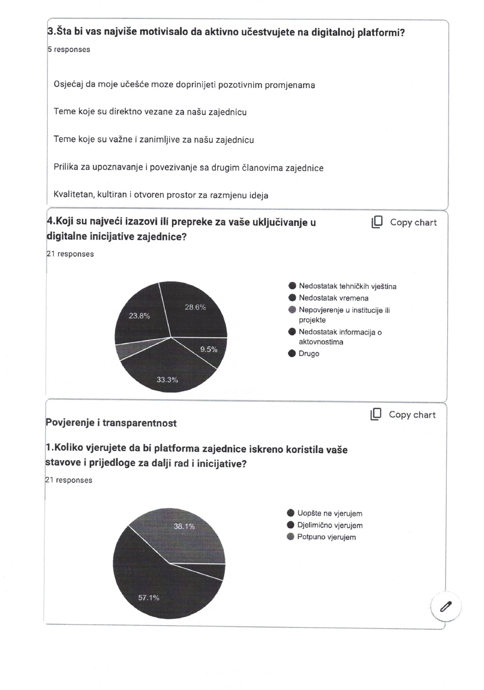
Rezultati anketeStranica 12 / 12
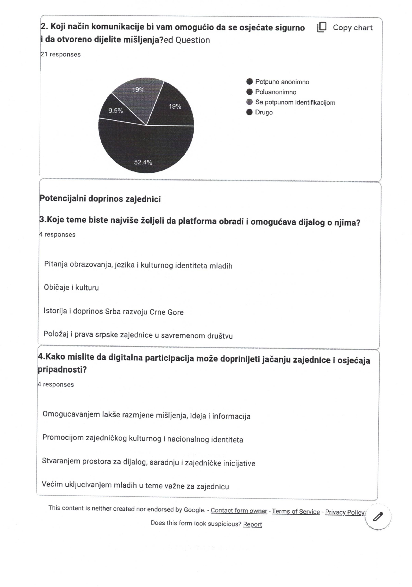
Vaše mišljenje je važno
Učestvujte u anketi
Odgovori se koriste isključivo za istraživačke svrhe uz potpunu anonimnost.